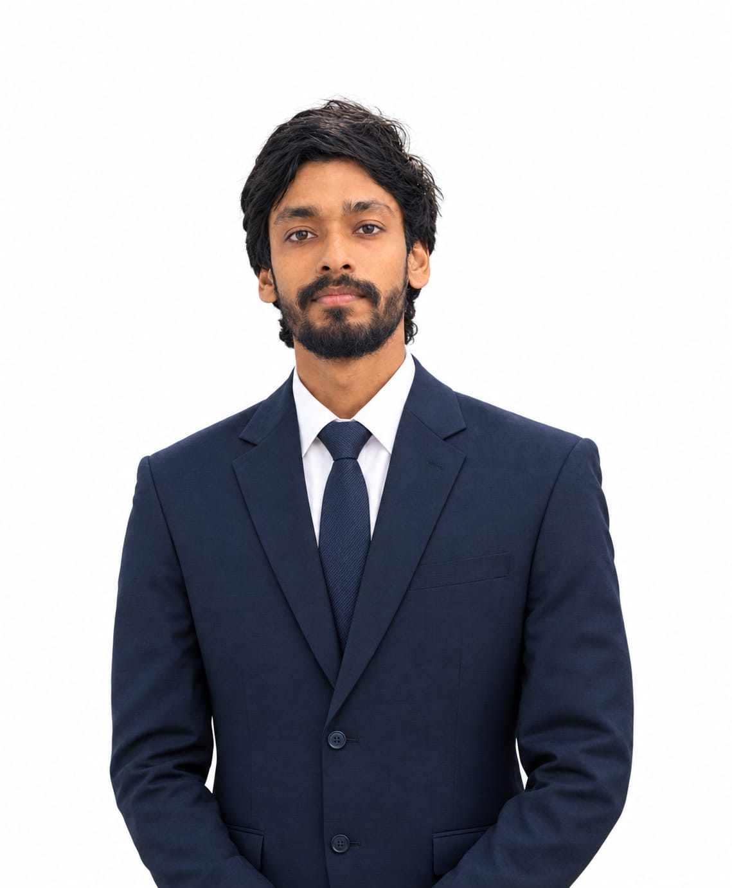
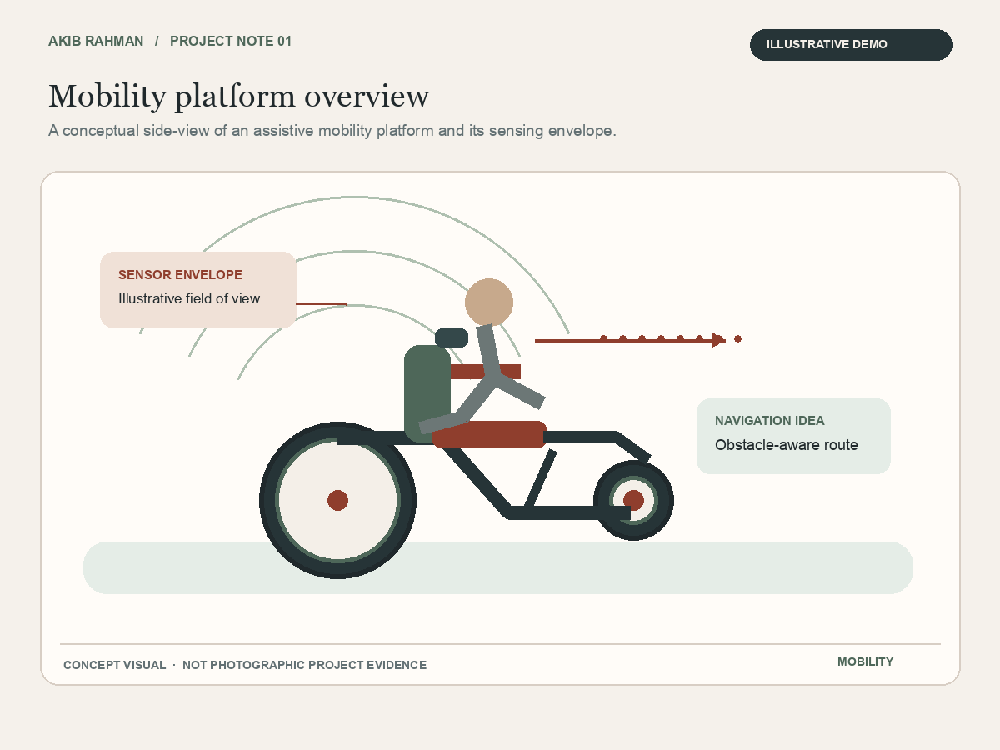
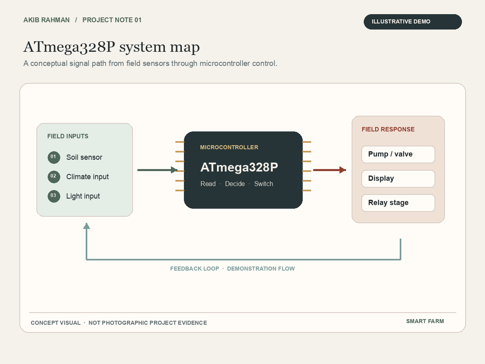

Digital design
Exploring how logic and code shape practical engineering systems.
EEE · AIUB · DHAKA
Final-year Electrical and Electronic Engineering student · Expected 2027
I am interested in digital design and embedded systems and I learn by building and testing engineering ideas and explaining what I find.

Meet Akib
In this introduction I share a little about my engineering studies and how I like to work through a project.
Use the video controls to play and adjust the sound.
A quick introduction
My capstone combines machine learning with Raspberry Pi 5 and ESP32-based hardware. I am interested in how careful engineering choices make technology useful in the real world.
More about my approachWhat I am exploring
Interests shaped by my coursework, team projects and the questions I want to keep pursuing.
Exploring how logic and code shape practical engineering systems.
Working with Raspberry Pi 5, ESP32 and ATmega328P in academic projects.
Motivated to learn more about VLSI and the semiconductor industry.
Interested in projects focused on safe mobility and remote monitoring.
Selected work
A mobility-focused capstone and a microcontroller-based smart farm system.

A four-person capstone integrating machine learning with Raspberry Pi 5 and ESP32-based hardware for safe navigation and remote biomedical monitoring.
Read project note →
A six-member group project centred on an ATmega328P-based smart farm system and IEEE-style technical reporting.
Read project note →I am happy to talk about my projects, engineering studies or internship opportunities.